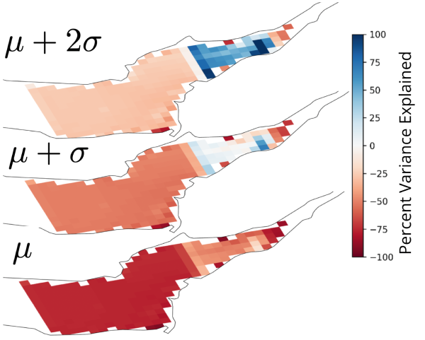

Empirical corrections are derived using the variational bayesian harmonic analysis method outlined in Monahan et al. All corrections provide true bayesian uncertainty estimation over both parameters and the original SWOT data.
This work has been developed and maintained by Thomas Monahan. with supervision from Thomas Adcock, Stephen Roberts and Tianning Tang at the University of Oxford Department of Engineering Science Environmental Fluid Mechanics and Machine Learning Research Groups.
Monahan, T., Tang, T., Roberts, S., and Adcock, T.: A framework for early-stage coastal and estuarine tidal and mean sea surface correction from the Surface Water Ocean Topography mission, EGU General Assembly 2024, Vienna, Austria, 14–19 Apr 2024, EGU24-15396, https://doi.org/10.5194/egusphere-egu24-15396, 2024.